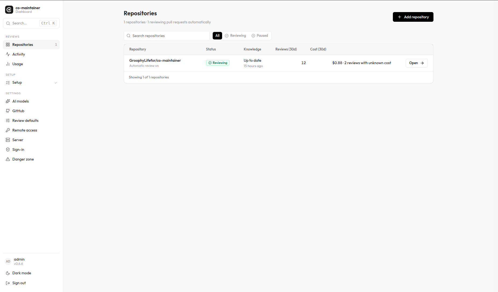

It learns how your repo is reviewed. Then it reviews like that.
An open source PR reviewer that runs on your machine or on your own server.
--gh-concurrent=N- Runs GitHub requests in parallel. The default is
1. Pick a number that keeps you under your GitHub rate limit. --ai-concurrent=N- Runs AI jobs in parallel. The default is
3. Pick a number your model provider's rate limit allows. --log-time- Prints how long each phase took. Useful when a run feels slower than its estimate.
Agent friendly by default.
The --json flag prints the whole review as JSON.
Ask it what it meant.
Reply to a finding and it answers on the same thread. This works when co-maintainer runs on your own server and is connected to your GitHub repository.
I don't understand the problem
The concern was bypassing dashboard sign-in: if /api/slack/test runs before requireSession, someone who can reach the server could trigger Slack test messages without logging in.
However, the current diff already places this route after the session check:
requireSession(request)runs first.- Missing sessions receive
401and return. - Only then can the request reach
handleSlackTestRoute.
So the authentication-bypass finding does not apply to the code shown now.
One dashboard for every repository.
co-maintainer serve starts it. Add a repository and every new pull request gets reviewed.

You're shocked, aren't you?
One developer, the CLI on a laptop.
- Local and PR review
- Any model on your own key
- Cost estimate before the first run
- Guides as plain Markdown you can read
A team sharing one server.
- Guides built once, shared with
--remote - Nobody rebuilds them on their laptop
- One token per developer, with its own usage and cost
- Dashboard sign-in with GitHub
Your infrastructure, your rules.
- MIT licensed
- No telemetry from the CLI,
serveor the dashboard - Runs in Docker or behind your reverse proxy
- OpenRouter, OpenAI, Anthropic or OpenCode
Donations and thanks. If you have no money to donate, you can pay with a thank you.
Watch the mockingbird.
No spam. A meaningful newsletter, written by a human: new features, CVE fixes and privacy changes.
This dispatch returns before
requireSession, allowing unauthenticated callers to send messages through the saved Slack webhook. The handler also accepts a caller-supplied URL and passes it directly to fetch, exposing server-side POST requests without dashboard authentication.Move this route behind the session guard.